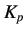
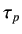
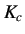
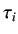

Figure 9.1:
Closed loop circuit
|
 |
We have
where
V(s) : Overall closed-loop transfer function
 (s) : Controller transfer function
(s) : Controller transfer function
G(s) : System transfer function.
Therefore,
Let the desired closed loop transfer function be of the form
By using the equations for G(s) and V(s), we get
where,
When  and  are known as a function of time, the values of  and  can be found as functions of
temperature as well.
rokade
2017-04-23